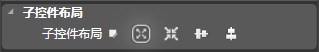

滚动层[UIScrollView]
图标
描述
UIScrollView的类是一个UIWidget子类，它实现了在触摸屏上的滚动层。
触摸一个滚动层时拦截事件和动作消息发送到目标对象时。设定的目标和行动方法都继承自UIWidget。该控件提供了方法来设置滚动层的裁切，显示区域宽高，滚动区域宽高，背景色透明度，填充颜色，图片资源等属性。
子控件布局

子控件布局是针对层容器的子控件来设置的属性。
- 绝对布局 ：布局内所有控件位置都是固定的，通过指定控件坐标来定义坐标的位置。
- 相对布局 ：布局内所有的控件的位置它决定于它和其他控件的关系。
- 线性横向 ：布局内所有的控件都被组织在同一行中。
- 线性纵向 ： 布局内所有的控件都被组织在同一列中。
默认值为绝对布局，但绝对布局是简单的、简陋的布局方式，在不同分辨率的屏幕中效果会比较差，推荐根据布局实际情况选择子控件布局方式。
尺寸和模式
尺寸模式
设置控件的尺寸模式。包含Custom模式和Auto模式。默认为Auto模式，该模式下控件的尺寸由系统自动设置。Custom模式为自定义模式，开启Custom模式可以手动修改控件的大小属性。
尺寸
- W：设置控件的宽，单位为像素（px）。
- H：设置控件的高，单位为像素（px）。
百分比
开启控件的百分比模式。该设置项仅在Custom模式先显示。
比例
- W：设置控件的宽，该值为控件的父控件的宽相对百分比。
- H：设置控件的高，该值为控件的父控件的高相对百分比。
九宫格
九宫格是利用一张很小的图片来绘制大区域图片却不失真的技术。
绘制时会遵循下面的规则：
a. 保持4个角部分不变形
b. 单向拉伸4条边（即在4个角两两之间的边，比如上边，只做横向拉伸）
c. 双向拉伸中间部分（即九宫格的中间部分，横向，纵向同时拉伸，PS：拉伸比例不一定相同）
CocoStudio共四个参数：
"原点X"、"原点Y" 是一对参数，它可以确定我们中心区域的左下角的坐标（左下角为原点）；
"尺寸W"、"尺寸H"则确定中心区域的大小；
注意 ：
控件宽要大于2*X、控件高要大于2*Y，否则容易出现贴图错位现象。
设置九宫格属性后应将缩放属性值都设置为1，否则图片仍然会出现失真。
常规属性
交互
控制控件是否接受用户事件，如果该控件需要接受用户事件（如按钮），则需勾选。
Tag
设置控件的Tag，程序中可以通过该Tag值获取该控件。
名字
设置控件的名称，程序中可以通过该名称获取该控件。
渲染层级
设置控件渲染的先后顺序。值越小越先渲染，但是可能会被后渲染的覆盖。
透明度
设置控件的透明度。取值范围为0到255。0 为纯透明，255为不透明。
颜色混合
此属性设置控件的混合颜色。点击下拉菜单后会出现颜色选择框，选择颜色后会将原控件与该颜色进行混合渲染。
控件布局
控件布局用于控制控件的位置、大小、缩放等信息，布局的属性区在不同的布局模式下会显示不同的设置选项。
该选项统一由父节点来设置。
包括：绝对布局模式、相对布局模式、横向线性布局模式、纵向线性布局模式。
绝对布局模式
百分比
设置是否开启百分比模式 。
坐标
设置控件的位置，单位为像素。
- X：设置控件的坐标X值
- Y：设置控件的坐标Y值
比例（%）
设置控件的位置，值相对于父控件尺寸的百分比。
缩放
设置控件的缩放比例，分为X轴缩放和Y轴缩放。值可以为正，也可以为负值，当为负值时可以实现翻转效果
旋转
设置控件的旋转属性，属性值为该控件以锚点为中心顺时针旋转的度数。
可以通过拖拽蓝色操作点控制旋转读书，控件的旋转方向和蓝色点相对中心点的方向一致。
相对布局模式
停靠
设置控件的停靠对象，默认为父控件，还可以选择和控件本身没有布局关系的同级控件。
- 停靠父对象
- 横向对齐：设置控件水平方向上的对齐方式，依次为“左边”、“居中”、“右边”。
- 纵向对齐：设置控件竖直方向上的对齐方式，依次为“上边”、“居中”、“下边”。
- 停靠同级对象
- 横向对齐：设置控件水平方向上的对齐方式，依次为“左边”、“居中”、“右边”。
- 纵向对齐：设置控件竖直方向上的对齐方式，依次为“上边”、“居中”、“下边”。
边缘
设置控件相对于停靠位置的距离。单位为像素。
缩放
设置控件的缩放比例，分为X轴缩放和Y轴缩放。值可以为正，也可以为负值，当为负值时可以实现翻转效果
旋转
设置控件的旋转属性，属性值为该控件以锚点为中心顺时针旋转的度数。
可以通过拖拽蓝色操作点控制旋转读书，控件的旋转方向和蓝色点相对中心点的方向一致。
线性横向布局模式
纵向布局
设置控件竖直方向上的对齐方式，依次为“上边”、“居中”、“下边”。（仅在停靠边界为”左“或者”右“时可以使用）
边缘
设置控件相对于停靠位置的位移。单位为像素。
注意：值只在特定的情况下设置
缩放
设置控件的缩放比例，分为X轴缩放和Y轴缩放。值可以为正，也可以为负值，当为负值时可以实现翻转效果
旋转
设置控件的旋转属性，属性值为该控件以锚点为中心顺时针旋转的度数。
可以通过拖拽蓝色操作点控制旋转读书，控件的旋转方向和蓝色点相对中心点的方向一致。
线性纵向布局模式
横向布局
设置控件水平方向上的对齐方式，依次为“左边”、“居中”、“右边”。（仅在停靠边界为”上“或者”下“时可以使用）
边缘
设置控件相对于停靠位置的位移。单位为像素。
注意：值只在特定的情况下设置
缩放
设置控件的缩放比例，分为X轴缩放和Y轴缩放。值可以为正，也可以为负值，当为负值时可以实现翻转效果
旋转
设置控件的旋转属性，属性值为该控件以锚点为中心顺时针旋转的度数。
可以通过拖拽蓝色操作点控制旋转读书，控件的旋转方向和蓝色点相对中心点的方向一致。
特性
模拟裁剪
隐藏掉控件显示区域外的子控件。
文件
配置一张默认下的图片（png,jpg），控件默认状态下显示。
.
滚动区域宽度
设置滚动区域的宽度。
注意：滚动区域宽高设置后渲染区会有一个绿色的线框与之对应，需要滚动的子控件都必须包涵在绿色线框内才能进行滚动。
滚动区域高度
设置滚动区域的高度。
背景色透明度
1. 设置背景颜色的透明度，范围0-255。 0表示完全透明，255表示不透明。
填充颜色
无颜色
无颜色状态下，控件背景色变成无
单色
设置背景色的颜色（RGB）
渐变色
- 开始色
- 结束色
- X
- Y
设置渐变色的起点颜色
设置渐变色的结束颜色
向量x
向量Y
滑动方向
设置默认的滑动方向。Vertical：垂直方向 / Horizontal：水平方向 .
开启回弹
设置拖拽层是否开启回弹效果。若开启，拖拽层的内容将能够被拖动至脱离拖拽层边界。